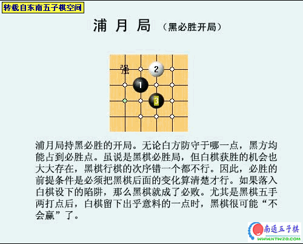
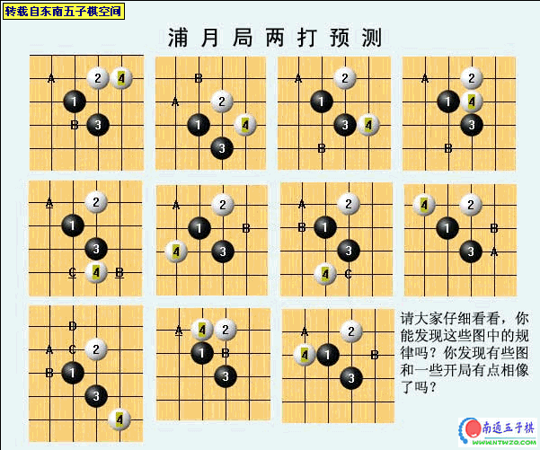
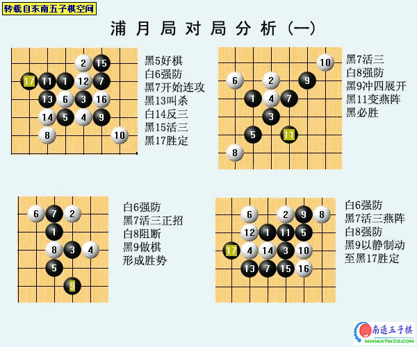
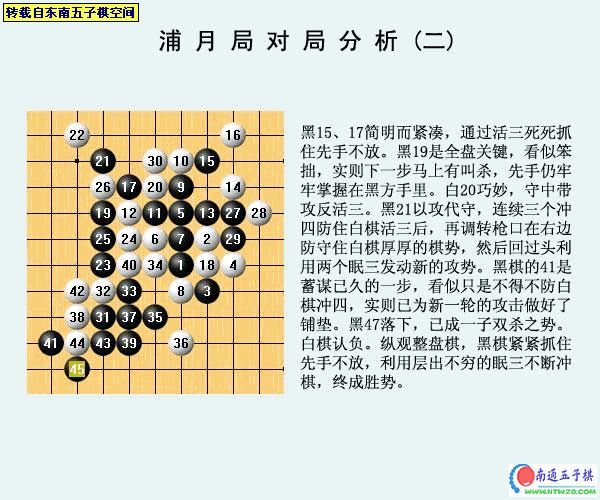
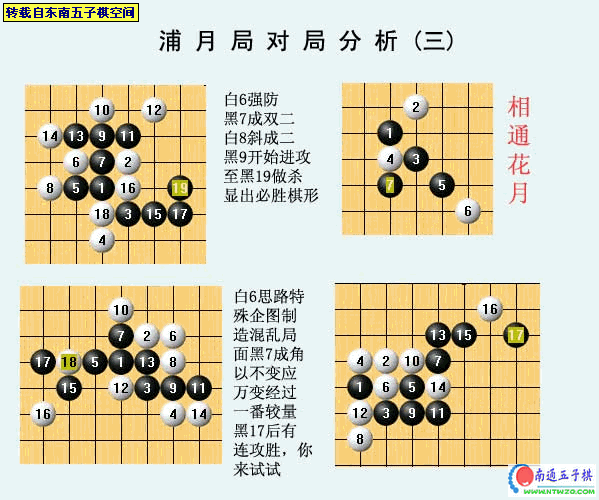
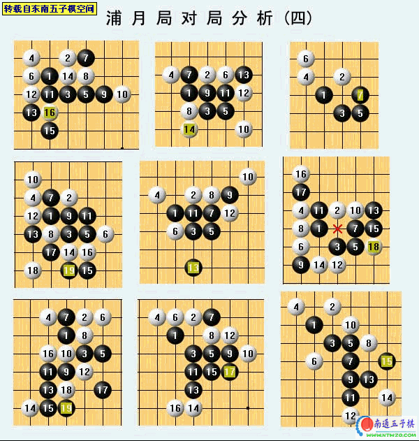
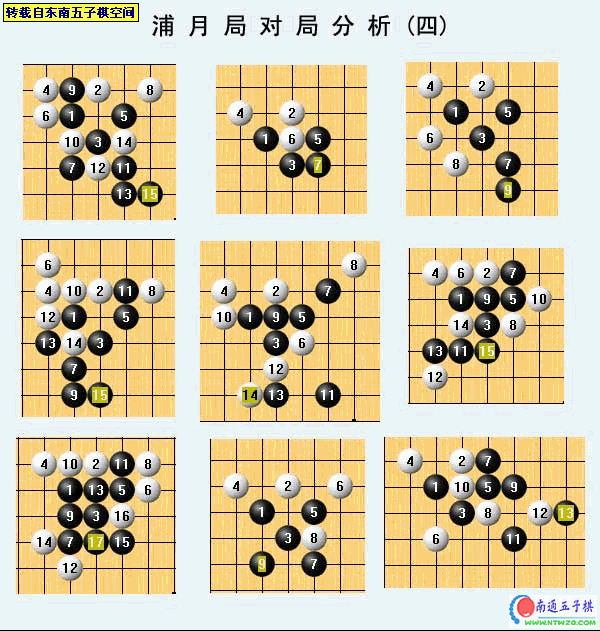

蒲月开局[东南五子棋讲座]
首页
定式及研究
#1 蒲月开局[东南五子棋讲座] 作者：有志青年 发表时间：2006-12-1 11:54:16







#2 Re:蒲月开局[东南五子棋讲座] 作者：停泊的船 发表时间：2006-12-16 14:39:56
好耶
#3 Re:蒲月开局[东南五子棋讲座] 作者：思过 发表时间：2006-12-18 13:21:11
要好好学习！谢谢
#4 Re:蒲月开局[东南五子棋讲座] 作者：聪明有余 发表时间：2007-2-2 17:19:30
这些东西实在 谢谢！
#5 Re:蒲月开局[东南五子棋讲座] 作者：奋斗者 发表时间：2007-2-19 11:41:11
太好了
#6 Re:蒲月开局[东南五子棋讲座] 作者：蓝雪儿 发表时间：2007-8-30 14:59:51
有图有讲解，好实在，感谢楼主的热心
#7 Re:蒲月开局[东南五子棋讲座] 作者：封禺 发表时间：2009-9-1 17:22:51
有志大哥真牛逼~ |